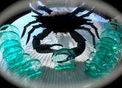
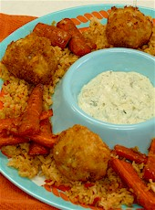
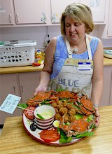
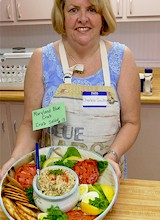
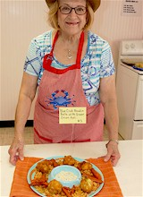
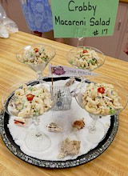

51st Crab Cooking Contest
Friday, September 4, 2015
Do you have a favorite recipe using Maryland Blue Crab?
If so, it may be a prize winner! Enter it in the Derby Crab Cooking Contest held every year at the First Baptist Church in Crisfield.
A panel of food experts will choose the most mouthwatering entries in the contest's three categories, Appetizer, Soup/Salad and Main Dish/Crab Cakes. Judges will evaluate entries based on appearance, overall flavor, crab flavor, originality, texture, clear directions, ease of preparation, ease of serving, and appropriate use of crab meat.
The top three recipes in each group will receive a plaque and a cash prize, ranging from $50 to $100. From the three 1st Place winners, judges will select a Grand Prize winner who will receive an additional $100. The Best Presentation winner will also receive honors.
At the end of the judging and awarding of prizes the dishes will be set out for everyone to sample.
The deadline for entries is August 28, 2015. Print out an application and the contest rules. More information can be obtained by calling the Crisfield Chamber office at 410-968-2500 or by sending an email to info@crisfieldchamber.com.
-
- Crab Cooking Contest
- Friday, September 4, 2015
- 8 AM
- First Baptist Church
1 South Somerset Avenue
Crisfield, Md 21817
-
- 
- Winners receive a plaque and a cash prize.
2015 Grand Prize Winner
|

Main Dish
Maryland Blue Crab Boudin Balls with Green Onion Aoli
by Mary Schafer
Crisfield, Maryland
|
Grand Prize Winning Recipe
Crab Balls
In food processor pulse red peppers, poblano pepper, celery, onion, and garlic until finely chopped.
Heat 2 tsp oil in a 10" skillet. Add vegetables and cook 8-10 minutes or until mixture is mostly dry.
Add broth, seasoning, and black pepper. Heat to boiling on high. Stir in rice, reduce heat to simmer. Cover and slowly simmer 15-20 minutes. When tender, pour into a 3 quart baking dish and cool.
When cool, fold in 1 lb. Maryland crabmeat, 2 green onions, finely chopped, 2 tablespoons melted butter, ½ teaspoon salt. Set aside.
In a medium bowl lightly beat 5 large eggs. In a shallow bowl, place 1½ cups panko bread crumbs. Form crab rice mixture into golf ball sized balls. Dip balls into eggs and then roll in panko crumbs.
Heat 1 quart oil in a 5 qt. saucepan to 375 degrees. Fry balls in small batches for 2-3 minutes, until deep golden brown. Transfer to paper towel lined platter.
Serve warm with green onion aoli.
Green Onion Aoli
In 8 inch skillet heat oil on medium high and add green onions and cook 2 minutes, stirring and garlic and cool 2 minutes, or until garlic is deep golden brown.
Remove from heat and when no longer hot, add to food processor with mayo, lemon peel, lemon juice and cilantro. Puree until smooth.
Refrigerate covered. Use within 2 days.
|
2015 Category Winners
|
Appetizer

Charlese Ann Smith
Bishopville, MD
Maryland Blue Crab
Crab Balls |
Soup/Salad

Charlese Ann Smith
Bishopville, MD
Maryland Blue Crab
Crab Salad |
Main Dish/Crab Cakes

Mary Schafer
Crisfield, Maryland
Blue Crab Boudin Balls with Green Onion Aoli
|
Best Presentation

Bobbi Willis
Crisfield, Maryland
Crabby Macaroni Salad
|
See the complete list of Grand Prize Winners from 1963 to 2015
The Crab Cooking Contest is supported by the Maryland Department of Natural Resources Fisheries Service, Seafood Marketing Program.